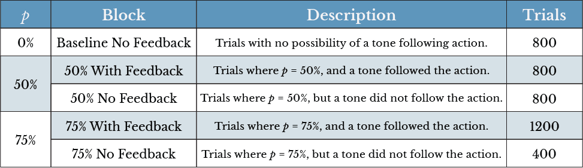
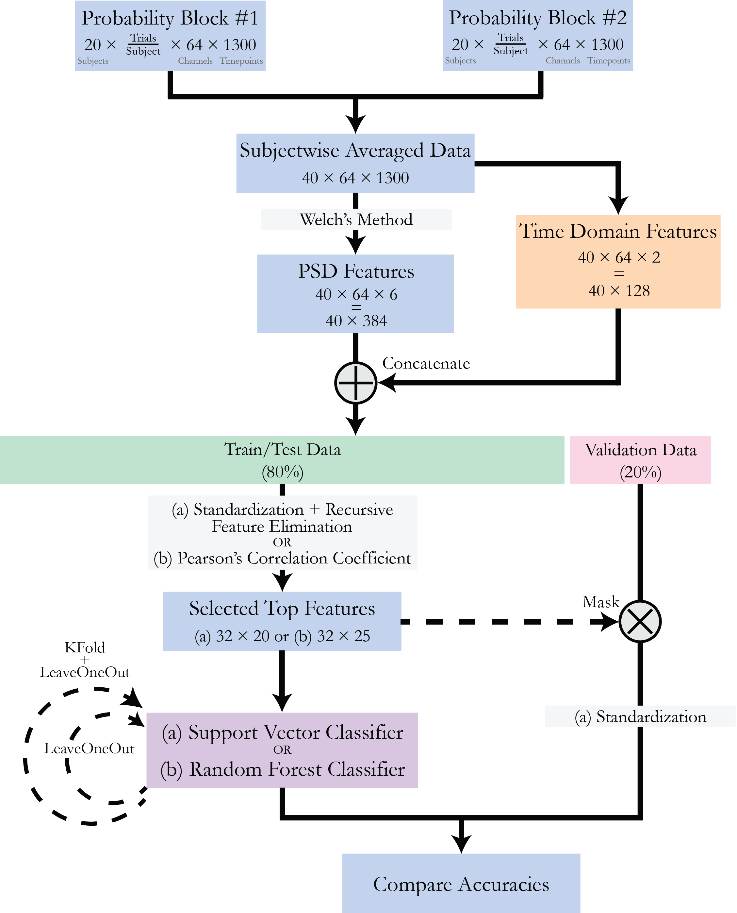

Multimodal Feedback Paradigms
Master's thesis at Johns Hopkins
Overview
Innovating paradigms multimodal feedback in augmenting perception and rehabilitation.
Role
Master's Thesis Researcher
Advisor
Jeremy D. Brown, PhD, Principal Investigator
Timeline
January 2024 to Present

Background
Senses in Human Perception
Humans experience the world through five primary sensations: touch, vision, hearing, taste, and smell. Each of these senses enables us to gather and process information from our surroundings, shaping our perception and interactions. Among these, touch and vision stand out as critical to our understanding of and engagement with the environment. Touch provides direct, immediate feedback about the physical world, from texture to pressure, crucial for motor tasks and social connections. Vision, highly salient, dominates our sensory processing, allowing us to interpret distance, motion, and color, making it indispensable for navigation and interaction.
Overview
Major Thesis Focus
The aim of the project is to elucidate the neural correlates between the prospective Sense of Agency and intentional binding experimentally. The objectives of the project can be summarized as the following:
- To demonstrate the role of the prospective component of Sense of Agency using machine learning classifiers.
- Build a classifier models relying upon specific features of a given premotor EEG signal as input to categorize data into various probability blocks.
- To localize the effects of intentional binding and Sense of Agency in the brain, narrowing down the source locations and frequency bands.
Rehabilitation Robotics
Multisensory Rehabilitation After Stroke
Novel Innovations
Pneumatactors
Love
The Lab
Creating Test Conditions
Probability Blocks to Simulate Outcome Predictability
A probability function was used to determine whether a tone is to be played as feedback to the voluntary movement or not. Probability functions of 0% (baseline), 50% and 75% were used to generate data in five blocks as shown below. All blocks were pooled for further steps.

Guided by Insight
Tackling the Data
The aim of this methodology is to be able to classify between different sets of probability blocks based on extracted frequency and time domain features. Choosing the correct antagonistic blocks for binary classification will be helpful to establish the existence of EEG signal markers which exist as differences between these two blocks.
The collected EEG data is analyzed subject-wise using the Welch’s Method for spectral density estimation. Based on these features extracted across different frequency ranges, they are attempted to be classified into the different probability blocks. Along with the frequency domain features, two time domain features are also computed for each EEG channel. To maintain information of the generic shape of the EEG amplitude, the overall Area Under the Curve (AUC) and slope is computed.
Different standardization techniques, feature selection methods, and machine learning models were tried and tested in this approach.

Drumroll
Results
All the data processing steps are executed in MATLAB. Following this, the PSD and AUC/Slope features are also extracted in MATLAB using the pwelch and trapz functions. Once the features are extracted, they are imported to Python for the machine learning and analysis steps. The binary classifiers are built across three groups:
- 50 No Feedback vs 75 No Feedback
- 50 Feedback vs 75 Feedback
- Baseline No Feedback vs 75 Feedback
Of the three mentioned binary classification problems, the highest predictabilities were observed in the 50 No Feedback vs 75 No Feedback blocks. Upon examining the intentional binding effects, it was also observed that the judgement error is lower for the subjects in the 75 No Feedback block than the 50 No Feedback block. This bolsters the idea that one’s own actions and experiences are essentially related to predictions of outcomes rather than merely judgements drawn in hindsight after the fact.